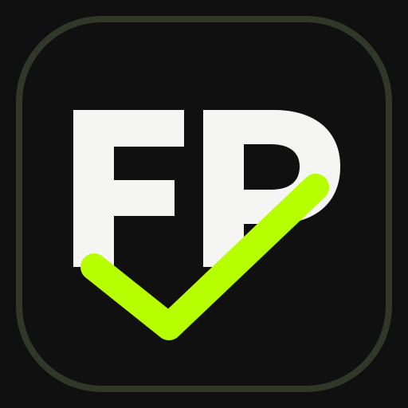

FitPlan
Quem está treinando?
—
Digite o PIN
1
2
3
4
5
6
7
8
9
0
⌫
Esqueci meu PIN
← Voltar
FP
FitPlan
⚙
TREINO • HOJE
FitPlan
Perfil: -
—
0
EXERCÍCIOS
0/0
⚒
Treino
◷
Histórico
⌁
Progresso
♙
Perfil
Limpar treino
Treino de hoje
Modo compacto
Exportar dados
Trocar usuário